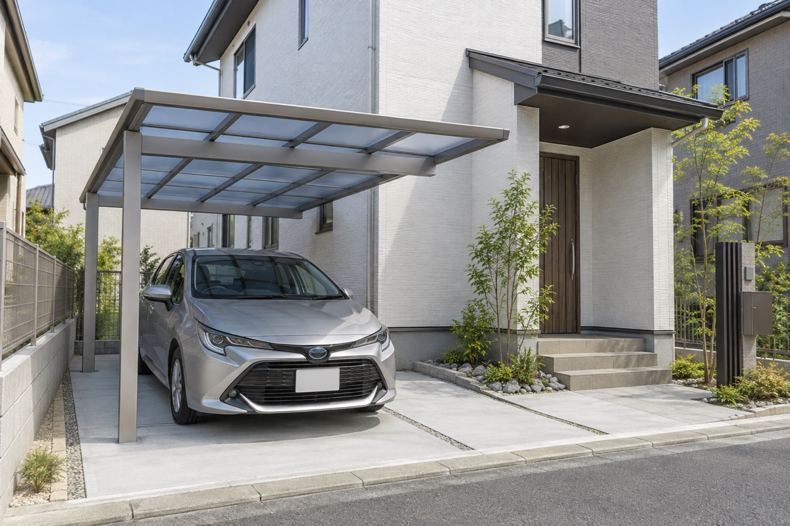
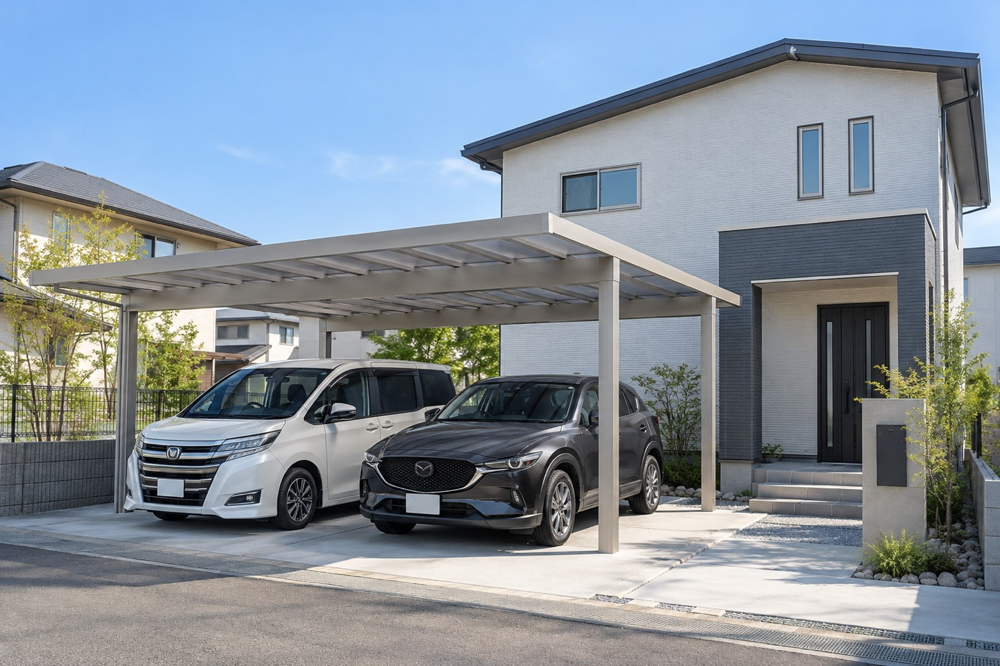

1台用完成イメージミニバン1台を考えている方へ
子どもを乗せるその側に、
ちゃんと立てる余裕を。
スライドドアが開いても、乗せ降ろしをする人のスペースは別に必要。柱の位置まで合わせて考えます。
- 幅
- ドアの開閉＋人が立つスペース
- 奥行・高さ
- 荷室のドアを開けた状態まで
- 配置
- 車を降りて、玄関へ歩く道筋
1台用・2台用 ／ オーダー設計にも対応
雨の日も、荷物の多い日も。愛車を守り、家族が乗り降りしやすい配置へ。次のSUVへの買い替えまで考えて選びます。

カーポート専門店・プラスカーポートは、
車種・家族の乗り方・敷地から、既製品選びもオーダー設計も。
1台用・2台用の選び方 01
「何台入るか」に、ドアを開ける幅と人が通る幅を足して考えます。
写真は完成イメージです。以下は実施工事例ではなく、車種別の検討例です。

1台用完成イメージミニバン1台を考えている方へ
スライドドアが開いても、乗せ降ろしをする人のスペースは別に必要。柱の位置まで合わせて考えます。
SUV＋ミニバンなど、2台を考えている方へ
車同士の間隔、柱との距離、先に出す車。2台それぞれの使い方から、無理のない幅と配置を検討します。
必要なサイズと柱の方式、工事内容で総額は変わります。ご希望の予算も、最初からお聞かせください。
工事費のどこを確認する？オーダーカーポート 02
ORDER MADE / PLUS CARPORT
「バイクも置きたい」「農具をしまいたい」「玄関まで屋根をつなげたい」。
車種だけでなく、仕事・趣味・毎日の動きまで聞いて、使い方に合う形を考えます。
機能や使い方から新しく制作した、AI生成のオリジナル設計イメージです。本欄は施工実績としての掲載ではありません。
車、バイク、軽トラック、農具。何を置き、どう使いたいかを聞きながら、敷地とご予算に合う形を一緒に整理します。
対応できる形・構造・仕様は、敷地や建物、地域の条件を確認してご案内します。
LINEで相談できること 03
商品名も、正確な寸法も、最初から調べなくて大丈夫です。
1台・2台、車種、乗り降りの仕方から
駐車場の写真と、いつもの出し入れから
仕様・工事範囲・必要な現地確認を整理
写真だけで設置可否や正確な金額は確定しません。現地で寸法・施工条件を確認してからご案内します。
「カーポートを考えています」だけでも大丈夫。写真や図面は、必要になってから。
LINEでサイズ・総額を相談確認用ページ：LINEの受付先を準備中です。現在は送信できません。
3つ選ぶと、確認したいことと相談文がまとまります。未定のままでも大丈夫です。
選んだ内容に応じた一般的な確認事項です。設置可否・寸法・費用を判定するものではありません。
専門店のチェックポイント 04
カーポートは、車を買い替えても使うもの。好きな車を選ぶ楽しみまで、サイズ選びで狭めないように。
車幅に、乗り降りのスペースを加えて確認。2台用は、車と車の間にも余裕を見ます。
全長・車高に加え、リアハッチを開けた位置やルーフキャリアの使用を確認します。
前面道路からの進入角度、ハンドルを切る場所、運転席のドアとの位置関係を見ます。
屋根の色や厚み、柱の見え方、玄関とのつながりまで含めて候補を比べます。
地域の風・積雪、敷地や施工の条件も含め、設置に適した仕様を確認します。
間口は幅方向、奥行は前後方向の寸法です。高さは商品により柱の高さなどを示します。実際に車や人が使える幅・高さは、屋根の外寸と異なるため、柱・梁を含めて確認します。
設置費用の考え方 05
同じ「2台用」でも、サイズや柱の方式、今の駐車場の状態で総額は変わります。見積もりでは、次の4つをそろえて確認します。
停めやすさ、見た目、ご予算。何を優先したいかを整理して、比較する候補を考えます。
購入前に確認したいこと 06
1台ずつなら余裕があっても、並べると狭くなることがあります。運転席・助手席、両方を確認します。
駐車したあとの位置だけでなく、道路から入る途中の動きを確認します。
本体・施工・追加工事・税込総額を確認。同じ条件にそろえると、候補を比較しやすくなります。
相談から施工まで 07
ご希望を整理し、設置条件と見積もりを確認してから。LINEの追加だけで契約になることはありません。
市区町村・車種・台数。写真は用意できれば。
停め方・乗り降り・見た目・予算から、候補を考えます。
寸法と施工条件を確認し、仕様・工事範囲・費用をご案内。
商品・費用・工程を確認して進めます。
相談前の気になること 08
オーダーカーポートもご相談いただけます。倉庫併設、屋上デッキ、玄関への屋根など、ご希望の使い方や参考写真をお聞かせください。敷地・建物・地域の条件を確認して、対応できる形と費用をご案内します。
決まっていなくて大丈夫です。「2台停めたい」「大きい車に買い替えたい」など、暮らしのご希望から必要なサイズや配置を考えます。
今の台数、将来の買い替え、自転車の置き場などをお聞かせください。敷地の広さと乗り降りの余裕を踏まえて比較します。
既存住宅も検討できます。敷地の寸法、境界、土間、地中の配管、道路や玄関との位置関係を確認して設置可否を判断します。
候補の車種があればお伝えください。今の車に加え、次の車の幅・長さ・高さや、ドアと荷室の開閉も含めて検討します。
写真はご希望や駐車場の状態を把握する出発点です。正確な設置可否や金額は、寸法・基礎・既存物などの施工条件を現地で確認してからご案内します。
設置予定地の市区町村をお知らせください。現地調査・施工の対応可否を確認してご案内します。